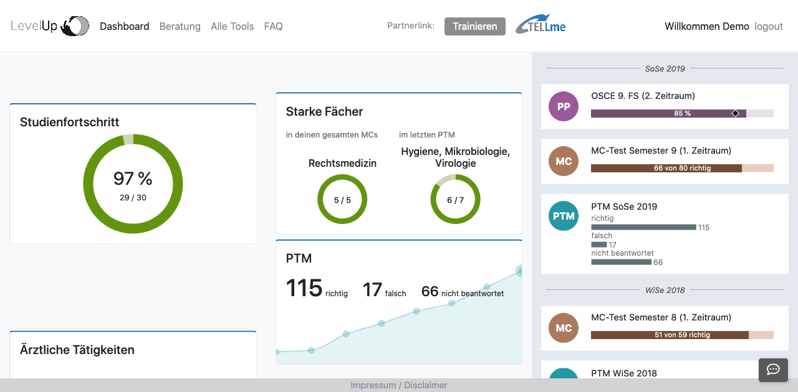
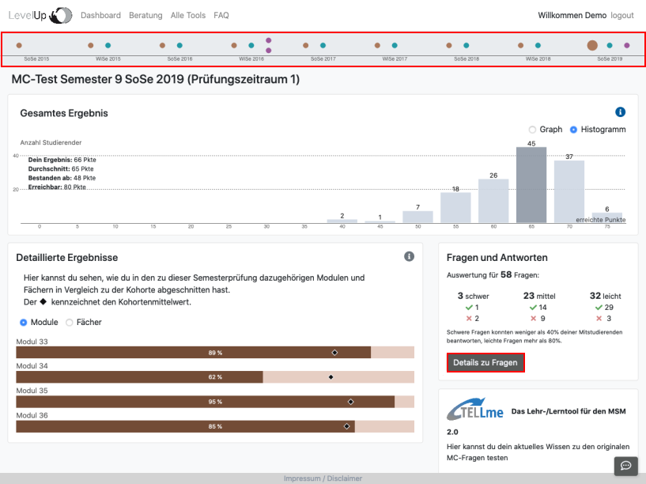
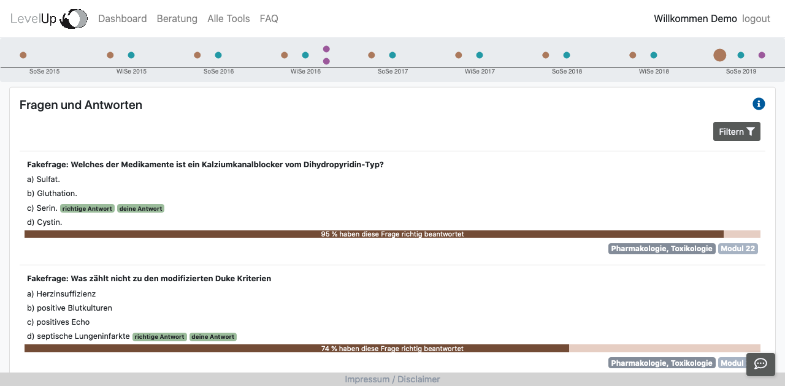

Auf der rechten Seite des Dashboards siehst du die Timeline. Dort findest du alle deine Prüfungen in chronologischer Reihenfolge. Klicke auf eine Prüfung, um dir deine Ergebnisse genauer anzuschauen.

Auf der Navigations-Leiste oben auf der Seite kannst du auch jederzeit eine andere deiner bereits absolvierten Prüfungen auswählen.

Hier siehst du nun, welche Fragen du richtig oder falsch beantwortet hast, was die richtigen Lösungen sind und auch welchem Fach und Modul die Fragen zugeordnet sind.

Wenn du zur Prüfungsvorbereitung MC-Fragen kreuzen möchtest, empfehlen wir dir unsere Partner-Plattform TellMe. Dort kannst du dein Wissen mit echten Altfragen testen und mit den Kommentaren zur richtigen Lösung lernen!